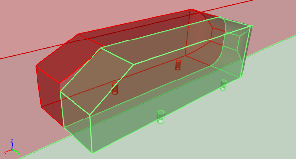
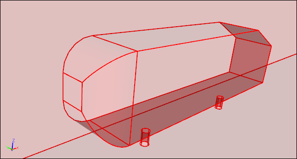
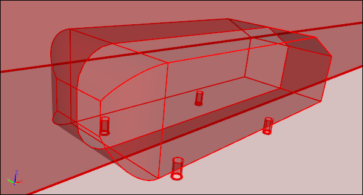
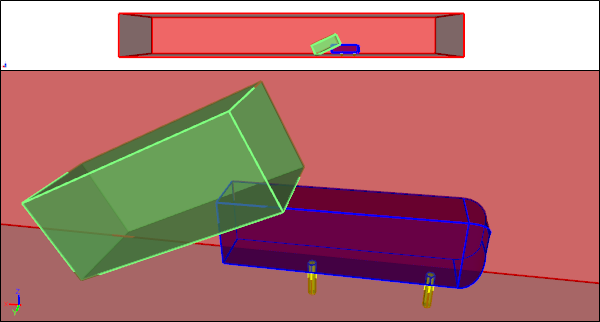
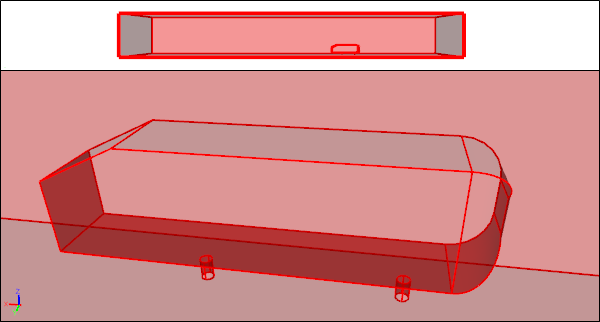

CFD Geometry Creation
Given the option, it is often better to create geometry specifically for your Computational Fluid Dynamics (CFD) simulations. It is even better if your CFD system supports geometry creation. Then you can stay within a single integrated simulation environment for your entire task without the need to learn or purchase additional software packages.
Two Flow Volumes Created Ready For CFD Simulation
Of course it helps if your geometry doesn't require manufacturing artifacts (e.g., bolts), at least initially, and you are using CFD early in the concept design phase of your overall design process. With total control over your geometry you can tailor it specifically for simulation. For example, if there is geometric symmetry and likely to be flow symmetry (as in external aerodynamic simulations over cars) then you can produce a half model, which will reduce memory requirements and turnaround time by up to 50%.
Half Model Due To Symmetry
Full ModelHalf model reflected in Y-Axis
Using an integrated analytic geometry engine within your CFD system also ensures that when you create a mesh the actual geometry is used, which then avoids faceted artifacts making it into your simulation results. Further, with access to a true geometry engine, you have the full power of standard geometry operations (e.g., Booleans and extrusions) to efficiently create watertight geometry. During direct geometry creation for CFD you can also avoid features (e.g., slivers, small gaps, and overlaps) that might cause problems for subsequent meshing operations.
Separate Volumes Prior to Boolean Operations
Single Watertight Volume After Boolean Operations
Taking control of your CFD geometry creation also opens the door to automating your simulations through the use of automated scripts. If a series of simulations are likely to be similar, then recording the operations for one CFD simulation in a script can provide an easy way to parameterize and automate a vast array of similar simulations.
Parameterized Rear Slant Angle Script Produces Watertight Half Flow VolumesSlant angles of 25 and 35 degrees shown side-by-side for comparison
Feedback
Questions? Ideas? Problems?

Recent blog posts
- CFD Simulates Distant Past
- Background on the Caedium v6.0 Release
- Long-Necked Dinosaurs Succumb To CFD
- CFD Provides Insight Into Mystery Fossils
- Wind Turbine Design According to Insects
- Runners Discover Drafting
- Wind Tunnel and CFD Reveal Best Cycling Tuck
- Active Aerodynamics on the Lamborghini Huracán Performante
- Fluidic Logic
- Stonehenge Vortex Revealed as April Fools' Day Distortion Field
 Get our Blog feed
Get our Blog feed
Comments
Hi Richard, Interesting post!
Hi Richard,
Interesting post! Just a question - about this part "Of course it helps if your geometry doesn't require manufacturing artifacts (e.g., bolts), at least initially, and you are using CFD early in the concept design phase of your overall design process" - in your experience do you think its easier that the initial design is done using directly CFD and then after a few iterations move to CAD for manufacturing adding the necessary "manufacturing artifacts"?
Keep up the good posts,
Pedro
For initial concept design use CFD geometry
Yes, I believe it is easier and more efficient to perform the initial concept design using CFD geometry 'and then after a few iterations move to CAD for manufacturing adding the necessary "manufacturing artifacts"'
Hi Richard, For my research
Hi Richard,
For my research work, I have to generate an axial turbine blades' fluid passage. Could you please give me some insights?
For example: https://www.cfdsupport.com/Turbomachinery-CFD-manual/viewAs1ModelT.png
Best regards,
Thanu
Decide between passage-to-passage or blade-to-blade
The passage way geometry has to be a solid volume. You need to decide whether you model: